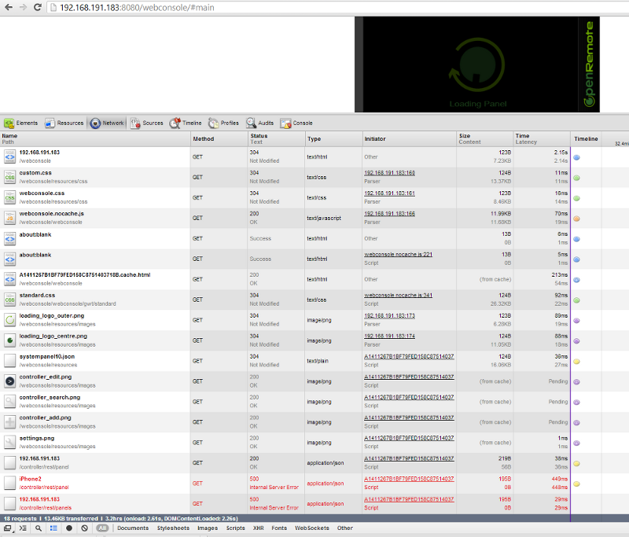

Hi everyone 
Now I'm testing the OR controller on a PC Linux Debian,
PC Intel(R) Celeron(R) CPU 2.40GHz, 32 bits, clock 100MHz,
System Memory size: 256MiB capacity: 2GiB, HD ATA Disk Seagate size: 37GiB (40GB).
The controller is OK, the panels loading is fast, but I have those problem with the webconsole.
Hi Richard,
My OpenRemote controller 2.0.1 is running and the web console 2.0 is the build 7178. (md5 = 026fb9251724ba65369609e982af7540 webconsole.war)
When I try the web console, it is "freezing" withe "Loading panel"

The erros is this:
Request URL:http://192.168.191.164:8082/controller/rest/panel/iPhone2
Request Method:GET
Status Code:500 Internal Server Error
Request Headersview source
Accept:application/json
Accept-Charset:ISO-8859-1,utf-8;q=0.7,*;q=0.3
Accept-Encoding:gzip,deflate,sdch
Accept-Language:it-IT,it;q=0.8,en-US;q=0.6,en;q=0.4
Connection:keep-alive
Host:192.168.191.164:8082
Referer:http://192.168.191.164:8082/webconsole/
User-Agent:Mozilla/5.0 (Windows NT 6.2) AppleWebKit/537.17 (KHTML, like Gecko) Chrome/24.0.1312.56 Safari/537.17
Response Headersview source
Connection:close
Content-Type:application/json;charset=UTF-8
Date:Mon, 28 Jan 2013 10:46:33 GMT
Server:Apache-Coyote/1.1
Transfer-Encoding:chunked
Thanks you very much for any suggestions,
I don't understand what is wrong.
Bye...
{kind=link}